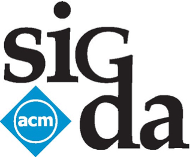

Workshop on Hardware and Algorithms for Learning On-a-chip
|
General InformationIn recent years, machine/deep learning algorithms has unprecedentedly improved the accuracies in practical recognition and classification tasks, some even surpassing human-level accuracy. While significant progresses have been made on accelerating the models for real-time inference on edge and mobile devices, the training of the models largely remains offline on server side. State-of-the-art learning algorithms for deep neural networks (DNN) imposes significant challenges for hardware implementations in terms of computation, memory, and communication. This is especially true for edge devices and portable hardware applications, such as smartphones, machine translation devices, and smart wearable devices, where severe constraints exist in performance, power, and area. There is a timely need to map the latest complex learning algorithms to custom hardware, in order to achieve orders of magnitude improvement in performance, energy efficiency and compactness. Exemplary efforts from industry and academia include many application-specific hardware designs (e.g., xPU, FPGA, ASIC, etc.). Recent progress in computational neurosciences and nanoelectronic technology, such as emerging memory devices, will further help shed light on future hardware-software platforms for learning on-a-chip. At the same time new learning algorithms need to be developed to fully explore the potential of the hardware architecture. The overarching goal of this workshop is to explore the potential of on-chip machine learning, to reveal emerging algorithms and design needs, and to promote novel applications for learning. It aims to establish a forum to discuss the current practices, as well as future research needs in the aforementioned fields. |
Key Topics
|
SpeakersKeynote
Invited Speakers
|
Preliminary ProgramNote: Time Zone is CST 11:00am — 11:05am Introduction and opening remarks ——— Keynote talk ——— 11:05am — 11:50am David Pan, The University of Texas at Austin ——— Session 1: Efficient I nference and Learning Algorithms ——— Section Chair: 11:50am — 12:15pm Meng Li, Facebook 12:15pm — 12:40pm Peter Kairouz, Google 12:40pm — 1:05pm Zhiru Zhang, Cornell University 1:05pm — 1:25pm Break ——— Session 2: Algorithm-Accelerator Co-design and Compilers ——— Section Chair: 1:25pm — 1:50pm Jonathan Frankle, Massachusetts Institute of Technology 1:50pm — 2:15pm Yuhao Zhu, University of Rochester 2:15pm — 2:40pm Bo Yuan, Rugster University ——— Session 3: Emerging Device and Neuromorphic Computing ——— Section Chair: 2:40pm — 3:05pm Jianhua Yoshua Yang, University of Southern California 3:05pm — 3:30pm Xue Lin, Northeastern University 3:30pm — 3:55pm Shimeng Yu, Georgia Tech ——— Keynote talk ——— 3:55pm — 4:40pm Vijay Janapa Reddi, Harvard University |
Organizing CommitteeCo-chairs
Steering Committee
Technical Program Committee
|
Sponsored by |
Last updated on Oct. 26, 2021. Contents subject to change. © All rights reserved. |